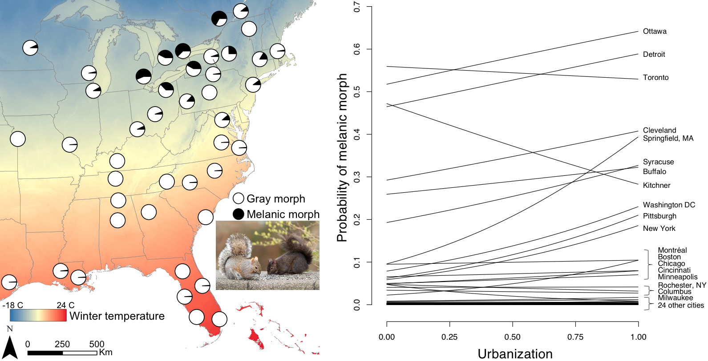

<!DOCTYPE html>

<html>

<head>

<meta charset="utf-8" />
<meta name="generator" content="pandoc" />
<meta http-equiv="X-UA-Compatible" content="IE=EDGE" />


<title>SquirrelMapper</title>

<script src="site_libs/jquery-3.6.0/jquery-3.6.0.min.js"></script>
<meta name="viewport" content="width=device-width, initial-scale=1" />
<link href="site_libs/bootstrap-3.3.5/css/cosmo.min.css" rel="stylesheet" />
<script src="site_libs/bootstrap-3.3.5/js/bootstrap.min.js"></script>
<script src="site_libs/bootstrap-3.3.5/shim/html5shiv.min.js"></script>
<script src="site_libs/bootstrap-3.3.5/shim/respond.min.js"></script>
<style>h1 {font-size: 34px;}
       h1.title {font-size: 38px;}
       h2 {font-size: 30px;}
       h3 {font-size: 24px;}
       h4 {font-size: 18px;}
       h5 {font-size: 16px;}
       h6 {font-size: 12px;}
       code {color: inherit; background-color: rgba(0, 0, 0, 0.04);}
       pre:not([class]) { background-color: white }</style>
<script src="site_libs/navigation-1.1/tabsets.js"></script>
<script src="site_libs/accessible-code-block-0.0.1/empty-anchor.js"></script>
<link href="site_libs/font-awesome-5.1.0/css/all.css" rel="stylesheet" />
<link href="site_libs/font-awesome-5.1.0/css/v4-shims.css" rel="stylesheet" />
<!DOCTYPE html PUBLIC "-//W3C//DTD HTML 4.01//EN" "http://www.w3.org/TR/html4/strict.dtd">
<html>
<head>
  <meta http-equiv="Content-Type" content="text/html; charset=utf-8">
  <meta http-equiv="Content-Style-Type" content="text/css">
  <title>SquirrelMapper</title>
  <meta name="Generator" content="Cocoa HTML Writer">
  <meta name="CocoaVersion" content="1504">
  <!-- this script changes the anchor position -->
  <!-- http://jsfiddle.net/ianclark001/rkocah23/ -->
<script>
(function(document, history, location) {
  var HISTORY_SUPPORT = !!(history && history.pushState);

  var anchorScrolls = {
    ANCHOR_REGEX: /^#[^ ]+$/,
    OFFSET_HEIGHT_PX: 65,

    /**
     * Establish events, and fix initial scroll position if a hash is provided.
     */
    init: function() {
      this.scrollToCurrent();
      $(window).on('hashchange', $.proxy(this, 'scrollToCurrent'));
      $('body').on('click', 'a', $.proxy(this, 'delegateAnchors'));
    },

    /**
     * Return the offset amount to deduct from the normal scroll position.
     * Modify as appropriate to allow for dynamic calculations
     */
    getFixedOffset: function() {
      return this.OFFSET_HEIGHT_PX;
    },

    /**
     * If the provided href is an anchor which resolves to an element on the
     * page, scroll to it.
     * @param  {String} href
     * @return {Boolean} - Was the href an anchor.
     */
    scrollIfAnchor: function(href, pushToHistory) {
      var match, anchorOffset;

      if(!this.ANCHOR_REGEX.test(href)) {
        return false;
      }

      match = document.getElementById(href.slice(1));

      if(match) {
        anchorOffset = $(match).offset().top - this.getFixedOffset();
        $('html, body').animate({ scrollTop: anchorOffset});

        // Add the state to history as-per normal anchor links
        if(HISTORY_SUPPORT && pushToHistory) {
          history.pushState({}, document.title, location.pathname + href);
        }
      }

      return !!match;
    },
    
    /**
     * Attempt to scroll to the current location's hash.
     */
    scrollToCurrent: function(e) { 
      if(this.scrollIfAnchor(window.location.hash) && e) {
        e.preventDefault();
      }
    },

    /**
     * If the click event's target was an anchor, fix the scroll position.
     */
    delegateAnchors: function(e) {
      var elem = e.target;

      if(this.scrollIfAnchor(elem.getAttribute('href'), true)) {
        e.preventDefault();
      }
    }
  };

    $(document).ready($.proxy(anchorScrolls, 'init'));
})(window.document, window.history, window.location);
</script>

<!-- this script changes the anchor position -->
<!-- http://jsfiddle.net/ianclark001/rkocah23/ -->
<script>
(function(document, history, location) {
  var HISTORY_SUPPORT = !!(history && history.pushState);

  var anchorScrolls = {
    ANCHOR_REGEX: /^#[^ ]+$/,
    OFFSET_HEIGHT_PX: 50,

    /**
     * Establish events, and fix initial scroll position if a hash is provided.
     */
    init: function() {
      this.scrollToCurrent();
      $(window).on('hashchange', $.proxy(this, 'scrollToCurrent'));
      $('body').on('click', 'a', $.proxy(this, 'delegateAnchors'));
    },

    /**
     * Return the offset amount to deduct from the normal scroll position.
     * Modify as appropriate to allow for dynamic calculations
     */
    getFixedOffset: function() {
      return this.OFFSET_HEIGHT_PX;
    },

    /**
     * If the provided href is an anchor which resolves to an element on the
     * page, scroll to it.
     * @param  {String} href
     * @return {Boolean} - Was the href an anchor.
     */
    scrollIfAnchor: function(href, pushToHistory) {
      var match, anchorOffset;

      if(!this.ANCHOR_REGEX.test(href)) {
        return false;
      }

      match = document.getElementById(href.slice(1));

      if(match) {
        anchorOffset = $(match).offset().top - this.getFixedOffset();
        $('html, body').animate({ scrollTop: anchorOffset});

        // Add the state to history as-per normal anchor links
        if(HISTORY_SUPPORT && pushToHistory) {
          history.pushState({}, document.title, location.pathname + href);
        }
      }

      return !!match;
    },
    
    /**
     * Attempt to scroll to the current location's hash.
     */
    scrollToCurrent: function(e) { 
      if(this.scrollIfAnchor(window.location.hash) && e) {
        e.preventDefault();
      }
    },

    /**
     * If the click event's target was an anchor, fix the scroll position.
     */
    delegateAnchors: function(e) {
      var elem = e.target;

      if(this.scrollIfAnchor(elem.getAttribute('href'), true)) {
        e.preventDefault();
      }
    }
  };

    $(document).ready($.proxy(anchorScrolls, 'init'));
})(window.document, window.history, window.location);
</script>

</head>
<body>
</body>
</html>

<style type="text/css">
  code{white-space: pre-wrap;}
  span.smallcaps{font-variant: small-caps;}
  span.underline{text-decoration: underline;}
  div.column{display: inline-block; vertical-align: top; width: 50%;}
  div.hanging-indent{margin-left: 1.5em; text-indent: -1.5em;}
  ul.task-list{list-style: none;}
    </style>


<link rel="stylesheet" href="styles.css" type="text/css" />


<style type = "text/css">
.main-container {
  max-width: 940px;
  margin-left: auto;
  margin-right: auto;
}
img {
  max-width:100%;
}
.tabbed-pane {
  padding-top: 12px;
}
.html-widget {
  margin-bottom: 20px;
}
button.code-folding-btn:focus {
  outline: none;
}
summary {
  display: list-item;
}
pre code {
  padding: 0;
}
</style>


<style type="text/css">
.dropdown-submenu {
  position: relative;
}
.dropdown-submenu>.dropdown-menu {
  top: 0;
  left: 100%;
  margin-top: -6px;
  margin-left: -1px;
  border-radius: 0 6px 6px 6px;
}
.dropdown-submenu:hover>.dropdown-menu {
  display: block;
}
.dropdown-submenu>a:after {
  display: block;
  content: " ";
  float: right;
  width: 0;
  height: 0;
  border-color: transparent;
  border-style: solid;
  border-width: 5px 0 5px 5px;
  border-left-color: #cccccc;
  margin-top: 5px;
  margin-right: -10px;
}
.dropdown-submenu:hover>a:after {
  border-left-color: #adb5bd;
}
.dropdown-submenu.pull-left {
  float: none;
}
.dropdown-submenu.pull-left>.dropdown-menu {
  left: -100%;
  margin-left: 10px;
  border-radius: 6px 0 6px 6px;
}
</style>

<script type="text/javascript">
// manage active state of menu based on current page
$(document).ready(function () {
  // active menu anchor
  href = window.location.pathname
  href = href.substr(href.lastIndexOf('/') + 1)
  if (href === "")
    href = "index.html";
  var menuAnchor = $('a[href="' + href + '"]');

  // mark it active
  menuAnchor.tab('show');

  // if it's got a parent navbar menu mark it active as well
  menuAnchor.closest('li.dropdown').addClass('active');

  // Navbar adjustments
  var navHeight = $(".navbar").first().height() + 15;
  var style = document.createElement('style');
  var pt = "padding-top: " + navHeight + "px; ";
  var mt = "margin-top: -" + navHeight + "px; ";
  var css = "";
  // offset scroll position for anchor links (for fixed navbar)
  for (var i = 1; i <= 6; i++) {
    css += ".section h" + i + "{ " + pt + mt + "}\n";
  }
  style.innerHTML = "body {" + pt + "padding-bottom: 40px; }\n" + css;
  document.head.appendChild(style);
});
</script>

<!-- tabsets -->

<style type="text/css">
.tabset-dropdown > .nav-tabs {
  display: inline-table;
  max-height: 500px;
  min-height: 44px;
  overflow-y: auto;
  border: 1px solid #ddd;
  border-radius: 4px;
}

.tabset-dropdown > .nav-tabs > li.active:before {
  content: "";
  font-family: 'Glyphicons Halflings';
  display: inline-block;
  padding: 10px;
  border-right: 1px solid #ddd;
}

.tabset-dropdown > .nav-tabs.nav-tabs-open > li.active:before {
  content: "&#xe258;";
  border: none;
}

.tabset-dropdown > .nav-tabs.nav-tabs-open:before {
  content: "";
  font-family: 'Glyphicons Halflings';
  display: inline-block;
  padding: 10px;
  border-right: 1px solid #ddd;
}

.tabset-dropdown > .nav-tabs > li.active {
  display: block;
}

.tabset-dropdown > .nav-tabs > li > a,
.tabset-dropdown > .nav-tabs > li > a:focus,
.tabset-dropdown > .nav-tabs > li > a:hover {
  border: none;
  display: inline-block;
  border-radius: 4px;
  background-color: transparent;
}

.tabset-dropdown > .nav-tabs.nav-tabs-open > li {
  display: block;
  float: none;
}

.tabset-dropdown > .nav-tabs > li {
  display: none;
}
</style>

<!-- code folding -->


</head>

<body>


<div class="container-fluid main-container">


<div class="navbar navbar-default  navbar-fixed-top" role="navigation">
  <div class="container">
    <div class="navbar-header">
      <button type="button" class="navbar-toggle collapsed" data-toggle="collapse" data-target="#navbar">
        <span class="icon-bar"></span>
        <span class="icon-bar"></span>
        <span class="icon-bar"></span>
      </button>
      <a class="navbar-brand" href="index.html">SquirrelMapper</a>
    </div>
    <div id="navbar" class="navbar-collapse collapse">
      <ul class="nav navbar-nav">
        <li>
  <a href="index.html">Home</a>
</li>
<li>
  <a href="about.html">About</a>
</li>
<li>
  <a href="results.html">Results</a>
</li>
<li>
  <a href="map.html">Squirrel Map</a>
</li>
<li>
  <a href="squirrelspotter.html">Squirrel Spotter</a>
</li>
<li>
  <a href="faq.html">FAQ</a>
</li>
<li>
  <a href="contact.html">Contact</a>
</li>
      </ul>
      <ul class="nav navbar-nav navbar-right">
        <li>
  <a href="mailto:cosentino@hws.edu">
    <span class="fa fa-envelope"></span>
     
  </a>
</li>
<li>
  <a href="https://twitter.com/squirrelsevolve">
    <span class="fa fa-twitter"></span>
     
  </a>
</li>
      </ul>
    </div><!--/.nav-collapse -->
  </div><!--/.container -->
</div><!--/.navbar -->

<div id="header">


<h1 class="title toc-ignore">SquirrelMapper</h1>

</div>


<script type="text/javascript">
$('.title').remove()
</script>
<p><br></p>
<div id="update---august-2022" class="section level2">
<h2><strong>Update - August 2022</strong></h2>
<p>SquirrelMapper team recently organized a one-week workshop with 10 New York Master Teachers to create K12 curricularr materials based on our project. The materials are being tested in the classroom this fall. This is the first of three cohorts creating educational materials over three years. Once the first batch of educational materials are finalized, we will post them on a new web page here at <a href="squirrelmapper.org">SquirrelMapper</a></p>
</div>
<div id="update---february-2022" class="section level2">
<h2><strong>Update - February 2022</strong></h2>
<p>Our paper on parallel evolution fo urban-rural clines in melanism is now published in <a href="https://www.nature.com/articles/s41598-022-05746-2">Scientific Reports</a>!</p>
</div>
<div id="update---august-2021" class="section level2">
<h2><strong>Update - August 2021</strong></h2>
<p>We’re excited to recently have <a href="https://doi.org/10.1101/2021.09.08.459478">posted a preprint</a> on the parallel evolution of urban-to-rural clines in melanism. Parallel evolution is basically when multiple poulations of a species evolve similar traits, and it’s thought to be common in urban areas because cities share so many characteristics like paved surfaces, increased air temperature, and pollution. We tested for consistent changes in melanism along urbanization gradients across 43 cities in North America, a level of replication among cities made possible by the large scope of a citizen science project like SquirrelMapper. More than 60,000 squirrel observations to submitted by citizen scientists to SquirrelMapper were used for the study. The analyses showed that melanism in gray squirrels consistently increases from rural to urban areas across multiple cities. These clines were strongest in large cities with extensive greenspace, primarily in northern cities with cold winters. Overall the study shows that phenotypic traits can evolve in a repeatable manner among cities, but that factors unique to each city - like climate, size, and land cover - can afffect the degree of parallel evolution.</p>
<div class="figure" style="text-align: center">

<p class="caption">
The pie charts (left) show the prevalence of melanism is greatest in northern cities with cold winters. Clines in melanism along urbanization gradients (right) were strongest in big cities in the north with high forest cover. Inset image by Eyesplash Photography at Flickr (License: <a href="https://creativecommons.org/licenses/by-nc-nd/4.0/">CC BY-NC-ND</a>).
</p>
</div>
</div>
<div id="update---february-2021" class="section level2">
<h2><strong>Update - February 2021</strong></h2>
<p>Discover Magazine published a <a href="https://www.discovermagazine.com/planet-earth/city-squirrels-look-different-is-evolution-driving-a-color-change">blog post</a> on our project on its Citizen Science Salon Blog. The blog describes some of the analyses we’ve been working on with the SquirrelMapper dataset. We’re also excited to announce that we’ve embarked on a four-year <a href="https://www.nsf.gov/awardsearch/showAward?AWD_ID=2018249&amp;HistoricalAwards=false">project funded by the National Science Foundation</a> to better understand how urbanization affects the evolution of coat color in gray squirrels. The project is a collaboration among Hobart &amp; William Smith Colleges, SUNY-ESF, and Yale University. Lots of citizen science and collaborative opportunities to come!</p>
</div>
<div id="update-december-2019" class="section level2">
<h2><strong>Update – December 2019</strong></h2>
<p>We’re thrilled to see interest in the <a href="http://squirrelmapper.org/">SquirrelMapper</a> project continuing to increase. Since our last update we’ve surpassed 2000 registered volunteers on Zooniverse. At <a href="https://www.inaturalist.org/projects/squirrelmapper">iNaturalist</a> over 18,000 people have contributed squirrel photos and nearly 5000 people have helped to confirm the species identification in those photos. We also recently launched a <a href="https://bcosentino.shinyapps.io/squirrelfinder/">“Find the Squirrel”</a> game that appears to be a hit. The game will help us understand whether the camouflage of gray and black squirrels differs in a variety of habitats. Finally, Dr. Kristin Winchell recently published a <a href="https://urbanevolution-litc.com/2019/12/18/natural-selection-favors-black-morph-of-eastern-gray-squirrel-in-cities/">very nice article</a> about the SquirrelMapper project at the <a href="https://urbanevolution-litc.com/">Life in the City</a> blog. Check out their blog for all kinds stories about the evolution of life in cities.</p>
<p>Here at Zooniverse we’ve now classified the coat color of squirrels from 36,501 images from around the world. We extracted a subset of nearly 25,000 images to look for spatial patterns of color morph frequencies. Many of the photos are excluded from analysis because they don’t have a squirrel or the coat color of the squirrel is ambiguous. For now we’re also just focusing on images with a single squirrel, which make up the vast majority of images. The bulk of the observations continue to come from eastern North America where gray squirrels are native, but we’re seeing squirrel observations in new places where they are introduced in Europe (e.g., France):</p>
<p></p>
<p><br></p>
<p>The map below shows the color morphs are squirrels in the United States and Canada (red dots = black morph, gray dots = gray morph). Places where the shade of the dots are darkest represent places with the most observations of each squirrel morph.</p>
<p></p>
<p><br></p>
<p>Here’s a different kind of map with the squirrel color morphs. Each circle represents a single squirrel and indicates the color morph (black or gray). This map also shows different land cover types (e.g., green = forest, red = urban, brown = agriculture). Observations of black squirrels are layered on top of observations of gray squirrels. This view shows that black squirrels are common in the far north where it is cold, but they also tend to cluster around cities.</p>
<p></p>
<p><br></p>
<p>Here’s a view of Europe, where the vast majority of squirrel observations continue to be of the gray morph:</p>
<p></p>
<p><br></p>
<p>Thanks again to everyone who has contributed to the SquirrelMapper project! We’ll be back with more data in January.</p>
</div>
<div id="mapping-squirrel-color-morphs---september-2019" class="section level2">
<h2><strong>Mapping squirrel color morphs - September 2019</strong></h2>
<hr>
<p>The SquirrelMapper project on Zooniverse started in July 2019. We’re delighted to see that more than 1000 people have contributed to classifying the coat color of eastern gray squirrels in just two months. Over at iNaturalist we’ve had over 15,000 contributors of squirrel photos and nearly 4000 participants help identify the squirrels observed in those photos. Thanks to all the citizen scientists for making this project a success.</p>
<p>This is a brief update on patterns we’ve observed with the data collected up to September 12, 2019. At that point 13,199 squirrel photos have been classified for coat color by at least 10 people. The bulk of the observations have been from the eastern U.S. and southeastern Canada where gray squirrels are native, but we’ve also received observations from places where gray squirrels have been introduced, including the U.K., Ireland, Italy, South Africa, and a handful of cities in western North America. Here’s a map of the worldwide distribution of squirrels classified here on Zooniverse:</p>
<p></p>
<p>Not all of the 13,199 make it to the data analysis stage. Some photos don’t actually include a physical squirrel (e.g., tracks in snow), and sometimes there’s not agreement among observers on how many squirrels are present or the coat color of those squirrels. The patterns shown below are based on 10,629 photos of a single physical squirrel where there was at least 80% agreement among observers on on the squirrel’s coat color.</p>
<p>The map below shows the color morphs are squirrels in the United States and Canada (red dots = black morph, gray dots = gray morph). Places where the shade of the dots are darkest represent places with the most observations of each squirrel morph. Black squirrels are most common in the northern part of the eastern gray squirrel’s native range, and they tend to cluster around cities, particularly Toronto, Detroit, and Cleveland, as well as cities along the U.S. east coast. We know black squirrels have a thermal advantage over grays in the winter, but they can be quite prevalent even in places with moderate temperatures, such as the introduced populations near Vancouver, Can and the San Francisco Bay Area in California.</p>
<p></p>
<p>Here’s another map showing the distribution of color morphs in North America, this time with the data summarized as the percentage of black squirrels in a standard grid. This map shows largely the same pattern but should be interpreted with caution because some grid cells have very few squirrel observations.</p>
<p></p>
<p>Here’s the situation in Europe, where the vast majority of squirrel observations have been of the gray morph:</p>
<p></p>
<p>That’s it for now. Many thanks to all the citizen scientists who are contributing to this project!</p>
</div>

<div id="footer">
<center>
<br>
<br>
<br>
<br>
<p>Last modified October 2022</p>
</center>
</div>


</div>

<script>

// add bootstrap table styles to pandoc tables
function bootstrapStylePandocTables() {
  $('tr.odd').parent('tbody').parent('table').addClass('table table-condensed');
}
$(document).ready(function () {
  bootstrapStylePandocTables();
});


</script>

<!-- tabsets -->

<script>
$(document).ready(function () {
  window.buildTabsets("TOC");
});

$(document).ready(function () {
  $('.tabset-dropdown > .nav-tabs > li').click(function () {
    $(this).parent().toggleClass('nav-tabs-open');
  });
});
</script>

<!-- code folding -->


<!-- dynamically load mathjax for compatibility with self-contained -->
<script>
  (function () {
    var script = document.createElement("script");
    script.type = "text/javascript";
    script.src  = "https://mathjax.rstudio.com/latest/MathJax.js?config=TeX-AMS-MML_HTMLorMML";
    document.getElementsByTagName("head")[0].appendChild(script);
  })();
</script>

</body>
</html>
